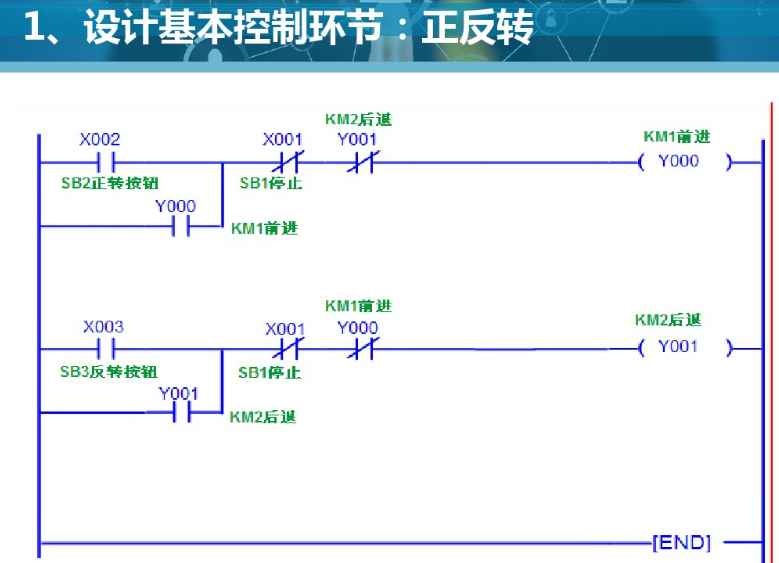

PLC控制系统设计的基本内容
(1) 制定控制系统设计的技术条件。技术条件一般 以设计任务书的形式来确定，它是整个系统设计的 依据。 (2) 选择主令元件和检测元件，电力拖动形式和电 动机、电磁阀、调节阀等执行机构。 (3) 选择PLC的型号。 (4) 分配PLC的I/O点数，绘制PLC的I/O硬件接线图。 (5) 设计控制系统的梯形图并调试。 (6) 设计控制系统的操作台、电气控制柜以及安装 接线图等。 (7) 编写设计说明图和使用说明书。 机型统一 一个企业应尽量统一PLC的机型，这样其外部设备通用，资 源可共享，也易于联网通信，便于组成分布式控制系统。 程序的初步调试是在模拟状态下进行的。如果控制系统是 由几个部分组成，则应先作局部调试，然后再进行整体调 试。如果控制系统的步骤较多，则可先进行分段调试，然 后再连接起来统调。 - 现场调试是对实际受控对象进行调试。首先应仔细检 查PLC的外部接线，硬件检查完毕后，将初步调试好的用户 程序进行总调试。总调试时也可以采用先作局部调试试验 或分段调试，直到各部分的功能都正常，并能协调一致贯 通成一个完整的体系为止。对不符合要求的部分，则可以 对硬件、软件调整，通常只需要修改程序即可达到调整的 目的。 - 全部调试好以后，将程序固化到存储器中，交用户使用。 根据继电器电路图设计梯形图的方法 控制系统的结构与控制方式选择 功能添加法--例送料小车  冗余控制系统